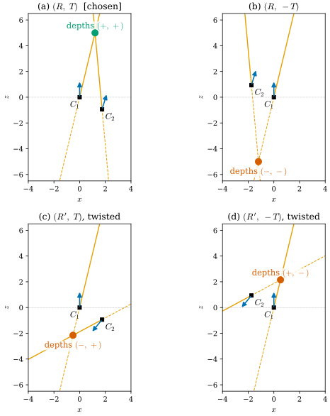
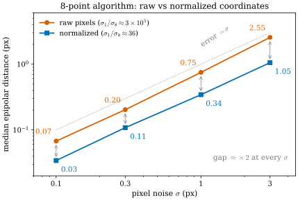

27.3 Epipolar Geometry and the Essential Manifold
Goals
- epipolar constraint \(\bar p_2^{\mathsf T}E\bar p_1 = 0\), \(E = [T]_\times R\)를 “두 ray와 baseline이 한 평면 위에 있다”로 유도하고, camera 1의 ray(fiber)가 camera 2에서 epipolar line으로 보인다는 것을 설명할 수 있다.
- essential matrix가 singular value \((\sigma, \sigma, 0)\)으로 특징지어지고, 정규화한 essential matrix 전체가 5차원 manifold(quotient 표현 포함)라는 것을 말할 수 있다.
- \(E\)의 네 가지 분해와 cheirality, fundamental matrix의 7 dof, 5/7/8-point algorithm의 숫자를 dimension 세기로 설명할 수 있다.
- triangulation을 두 fiber의 교차로 보고, baseline이 짧을 때 깊이가 불안정한 이유를 \(J\)의 kernel과 ray 사이의 각으로 수치와 함께 설명할 수 있다.
Prerequisites
- Section 27.1: fiber = ray, \(\ker J_t = \R t\)(Proposition 27.1.1)
- Section 27.2: 직선은 covector(Proposition 27.2.3), projective camera는 앞뒤를 구별하지 못한다(Proposition 27.2.1), homography와 dimension 세기(Proposition 27.2.2)
- Example 0.6.7: \(\mathrm{SO}(3)\)는 3차원 manifold이고 \([\omega]_\times v = \omega \times v\) (0.6.6)
- Section 0.8: manifold 위의 최적화(retraction)
- SfM의 two-view geometry와 RANSAC [Schonberger16], [HZ]
Motivation
Section 27.2까지는 카메라 한 대를 보았다. 카메라 한 대로는 fiber 위의 좌표, 곧 깊이를 되찾을 수 없다(Section 27.1). incremental SfM은 그래서 두 영상에서 시작한다. COLMAP은 영상 쌍마다 대응점으로 two-view geometry(essential, fundamental matrix 또는 homography)를 RANSAC으로 추정하고, 그 가운데 triangulation 각이 충분히 큰 쌍으로 복원을 시작한다 [Schonberger16].
이 절은 그 과정의 기하를 다룬다.
- 대응점 한 쌍은 두 카메라의 상대 pose에 대해 무엇을 말하는가?
- “5-point”, “7-point”, “8-point”의 숫자는 어디서 오는가? 왜 5-point는 해가 여러 개인가?
- \(E\)를 분해하면 왜 pose가 네 개 나오고, 어떻게 하나를 고르는가?
- baseline이 짧으면 깊이는 얼마나 불안정해지는가? COLMAP의 triangulation 각 기준은 무엇을 뜻하는가?
The Epipolar Constraint
한 점의 두 camera 좌표는 \(t_2 = Rt_1 + T\)를 만족한다. 양변에 \(T\)를 cross product하면 \(T \times t_2 = T \times Rt_1\)이고, 다시 \(t_2\)와 inner product를 하면 왼쪽이 \(0\)이 된다. 두 depth \(t_{1,z}, t_{2,z}\)로 나누면
이다 [LonguetHiggins81]. \(E\)를 essential matrix라 한다. 첫 식은 \(\det(t_2,\ T,\ Rt_1) = 0\)과 같다. camera 2의 좌표에서 \(t_2\)는 ray 2의 방향, \(T\)는 camera 1의 중심, \(Rt_1\)은 ray 1의 방향이므로, 두 ray와 baseline이 한 평면, 곧 epipolar plane 위에 있다는 말이다. 둘째 줄의 \(l_2\)는 영상 2의 직선이고(\(\bar p_2\)가 그 위에 있다), 이것이 epipolar line이다. 직선이므로 covector이고(Proposition 27.2.3), \(E\)는 영상 1의 점(vector)을 영상 2의 직선(covector)으로 보내는 linear map이다. \(e_2 \propto T\)와 \(e_1 \propto R^{\mathsf T}T\)는 epipole, 곧 상대 카메라 중심의 image다.
![위아래 두 패널. 위 (a)는 3D 그림으로, 왼쪽 아래의 C_1과 오른쪽의 C_2가 검은 baseline으로 이어지고, 위쪽의 점 X로 주황 ray 1, ray 2가 뻗는다. 세 점이 이루는 삼각형이 연초록으로 칠해져 있다(epipolar plane). C_1과 C_2 앞에 하늘색 사각형 image 1, image 2가 있고 각 사각형 안에 초록 직선(epipolar line)이 지난다. ray 1 위의 파란 점 세 개(s = 2, 3.5, 8이라고 적혀 있고, s = 8은 X 너머의 점선 위에 있다)에서 C_2로 파란 점선이 이어지고, 그 점선이 image 2의 초록 직선 위의 파란 점을 지난다. 아래 (b)는 camera 2의 영상 평면으로, 거의 수평인 초록 직선 l_2 = E p̄_1 위에 파란 점들이 왼쪽부터 s = 0.5, 1, 2, 3.5, 5(주황), 8, 20 순서로 놓이고, 오른쪽 끝에 주홍 사각형 's → ∞: R p̄_1'이 있다. 파란 사각형은 image 2 frame이다. 왼쪽 끝을 가리키는 화살표에 'to e_2 at ū_x = −6.0 (image of C_1)'이라고 적혀 있다.](figures/fig-27-3-1-epipolar.svg)
Figure 27.3.1의 (a)에서 ray 1을 따라 \(C_1\)에서 멀어지는 파란 점들을 보자. camera 1에게는 모두 같은 pixel이지만(같은 fiber), camera 2에게는 서로 다른 점이다. 그 image들은 epipolar plane과 image 2의 교선, 곧 초록 직선 위에 줄지어 놓인다. (b)는 그 직선을 펼쳐 놓은 것이다. 깊이 \(s\)가 0에 가까우면 image는 \(C_1\)의 image인 epipole \(e_2\)로, 무한대로 가면 ray 1의 방향의 vanishing point \(R\bar p_1\)로 간다((27.2.2)). 대응점 탐색을 epipolar line 위로 좁히는 것과 stereo matching의 disparity 탐색은 이 직선 위에서 깊이 \(s\)를 찾는 일이다.
pixel 좌표 \(p_i = \mathsf K_i\bar p_i\)로 쓰면
이고, \(F\)를 fundamental matrix라 한다. \(\mathsf K_2^{-\mathsf T}\)가 붙는 것은 epipolar line이 covector이기 때문이다((27.2.4)의 \(l \mapsto H^{-\mathsf T}l\)).
The Essential Manifold
모든 \(3 \times 3\) 행렬이 essential matrix는 아니다. \(E\)는 9개의 수지만 그것을 만드는 \((R, T)\)는 6개의 수이고, 그마저 다 보이지 않는다. epipolar constraint는 \(E\)의 scale에 무관하므로 \(\abs{T}\)를 되찾을 수 없다(장면 전체를 키워도 영상이 같다). 그래서 \(\abs{T} = 1\)로 정규화하고, 남는 것이 무엇인지 본다.
Proposition 27.3.1 (characterization of essential matrices). \(0\)이 아닌 \(3 \times 3\) 행렬 \(M\)이 어떤 \(R \in \mathrm{SO}(3)\)와 \(T \ne 0\)에 대해 \(M = [T]_\times R\)로 쓰이는 것은, \(M\)의 singular value가 \((\sigma, \sigma, 0)\) (\(\sigma \gt 0\))일 때이고 그때뿐이다. 이때 \(\sigma = \abs{T}\)이다 [Ma04].
Derivation. \(\abs{T} = 1\)이면 \([T]_\times[T]_\times^{\mathsf T} = I_3 - TT^{\mathsf T}\)의 eigenvalue가 \(1, 1, 0\)이므로 \([T]_\times\)의 singular value는 \((1, 1, 0)\)이고, 오른쪽에 rotation \(R\)을 곱해도 singular value는 그대로다. 역으로 \(M = U\diag(\sigma, \sigma, 0)V^{\mathsf T}\)이고 (셋째 column의 부호를 바꿔도 \(M\)은 그대로이므로) \(U, V \in \mathrm{SO}(3)\)라 하자. \(e_z = (0, 0, 1)\)과 \(W = R_z(-90^\circ)\)(COLMAP 코드의 이름을 따랐다. Chapter 29의 rotation \(W\)와는 관계없다)에 대해 \([e_z]_\times W = \diag(1, 1, 0)\)이고 \(U[a]_\times U^{\mathsf T} = [Ua]_\times\)이므로 \(M = \sigma U[e_z]_\times WV^{\mathsf T} = [\sigma Ue_z]_\times\,(UWV^{\mathsf T})\)이다. 곧 \(T = \sigma u_3\)(\(U\)의 셋째 열), \(R = UWV^{\mathsf T}\)이다.
Proposition 27.3.2 (the normalized essential space is 5-dimensional). singular value가 \((1, 1, 0)\)인 행렬 전체 \(\mathcal E\)는 \(\R^{3 \times 3}\)의 5차원 submanifold다. 다음 세 방식으로 같은 숫자 5가 나온다.
- parametrization. \((R, T) \mapsto [T]_\times R\)는 \(\mathrm{SO}(3) \times S^2\)(3 + 2 = 5차원)에서 \(\mathcal E\)로 가는 surjective map이고 differential의 rank가 5다. \((R, T)\)와 \((R_T(\pi)R,\ -T)\)가 같은 \(E\)를 주므로 2대1이다(\(R_T(\pi)\)는 \(T\)축 둘레 \(180^\circ\) 회전).
- equations. \(\mathcal E\)는 9개의 cubic 방정식 \(2EE^{\mathsf T}E - \tr(EE^{\mathsf T})\,E = 0\)과 \(\abs{E}^2 = 2\)로 정해지고, 그 점에서 Jacobian matrix의 rank는 4다. tangent space의 dimension은 \(9 - 4 = 5\)다.
- quotient. Tron과 Daniilidis는 \(E(Q) = R_1^{\mathsf T}[e_z]_\times R_2\), \(Q = (R_1, R_2) \in \mathrm{SO}(3) \times \mathrm{SO}(3)\)로 쓰고(baseline을 \(e_z\)에 맞춘 좌표다), 같은 \(E\)를 부호까지 주는 \(Q\)가 정확히 \(Q\)에 \(H_z\)와 \(H_\pi\)의 원소를 곱한 것들임을 보였다 [Tron17, Proposition 4.3]. \(H_z = \{(R_z(\theta), R_z(\theta))\}\)는 baseline 둘레로 좌표 전체를 돌리는 것(1차원), \(H_\pi\)는 원소 4개인 group으로 twisted pair와 \(E\)의 부호를 바꾸는 것이다. 그래서 \(E\)와 \(-E\)를 같게 본 \(\mathcal E/\{\pm 1\}\)(논문의 normalized essential space \(M_E\))이 quotient manifold(몫다양체) \((\mathrm{SO}(3) \times \mathrm{SO}(3))/(H_\pi \times H_z)\)이다(논문의 식 (42)와 같은 표기). \(H_\pi\)는 discrete하므로 dimension은 \(6 - 1 = 5\)다. 부호까지 정확히 같은 \(E\)를 주는 \(Q\)는 \(H_\pi\)의 원소 둘(그중 하나는 항등원)에 해당하는 circle 두 개이고, \(\mathcal E\) 자신은 \(\mathcal E/\{\pm 1\}\)을 2대1로 덮는다. 둘 다 5차원이다.
Derivation. 첫째 방식의 rank와 둘째 방식의 Jacobian rank(9개의 cubic 방정식만이면 rank 3, 정규화를 더하면 4)는 verify 스크립트에서 무작위 점마다 수치로 계산했다. cubic 방정식은 singular value가 \((\sigma, \sigma, 0)\)인 것(또는 \(E = 0\))과 같다. \(E = U\diag(\sigma_1, \sigma_2, \sigma_3)V^{\mathsf T}\)에 대입하면 \(i\)번째 대각 성분이 \(\sigma_i\big(2\sigma_i^2 - (\sigma_1^2 + \sigma_2^2 + \sigma_3^2)\big) = 0\)이 된다. 0이 아닌 \(\sigma_i\)는 모두 \(\sigma_i^2 = \tfrac12\sum_j\sigma_j^2\)이어야 하므로 서로 같고, 그런 것이 \(k\)개이면 \(\sigma^2 = k\sigma^2/2\)에서 \(k = 2\)다. 곧 0이 아닌 singular value는 정확히 두 개이고 서로 같다. 셋째 방식의 invariance \(E\big(R_z(\theta)R_1, R_z(\theta)R_2\big) = R_1^{\mathsf T}[R_z(\theta)^{\mathsf T}e_z]_\times R_2 = E(Q)\)도 직접 확인된다. 이것이 differential의 kernel이기도 하다. SVD 표현 \((U, V) \mapsto U\diag(1, 1, 0)V^{\mathsf T}\)의 Jacobian도 rank 5이고, kernel은 \(U\)와 \(V\)의 오른쪽에 같은 \(R_z(\theta)\)를 곱하는 방향이다(\(R_z(\theta)\)가 \(\diag(1, 1, 0)\)과 교환하므로 \(E\)가 그대로다. verify에서 확인했다). orbit이 정확히 그것뿐이라는 증명은 [Tron17]의 Proposition 4.3과 그 부록 A에 있다.
essential matrix 전체(정규화하지 않은 것)는 이 5차원 manifold 위의 cone, 곧 6차원이고, 영상이 볼 수 있는 것은 그 가운데 5차원이다. Section 27.2의 말로 하면, 두 calibrated 카메라의 pose \((R, T)\)(6차원)에서 similarity의 scale 하나가 빠진 것이다. [Ma04]는 essential matrix 전체를 essential space라 부르고, manifold 위의 최적화를 다루는 문헌은 정규화한 \(\mathcal E\)(또는 \(\mathcal E/\{\pm 1\}\))를 essential manifold라 부른다 [Helmke07], [Tron17].
Four Decompositions and Cheirality
Proposition 27.3.1의 derivation에서 \(W\)를 \(W^{\mathsf T}\)로, \(u_3\)을 \(-u_3\)으로 바꾸어도 같은 \(E\)(부호까지)가 나온다. epipolar constraint는 \(E\)를 scale까지만 정하므로 넷 모두 후보다.
Proposition 27.3.3 (four decompositions). \(E = U\diag(1, 1, 0)V^{\mathsf T}\)(\(U, V \in \mathrm{SO}(3)\))이면 \(E\)를 부호까지 주는 \((R, T)\)는 정확히
의 넷이다. 대응점 하나를 이 넷으로 triangulation하면 두 depth의 부호는 \((+,+)\), \((-,-)\), \((+,-)\), \((-,+)\)가 하나씩 나온다(두 twisted 분해 가운데 어느 쪽이 \((+,-)\)인지는 점마다 다를 수 있지만, \((+,+)\)는 언제나 참 pose다 [Tron17, Proposition 5.1]). 그러므로 점이 두 카메라 앞에 있어야 한다는 조건(cheirality)이 하나를 고른다.
COLMAP도 정확히 이렇게 한다. geometry/essential_matrix.cc의 DecomposeEssentialMatrix는 \(W = \begin{pmatrix} 0 & 1 & 0 \\ -1 & 0 & 0 \\ 0 & 0 & 1 \end{pmatrix}\)(곧 \(R_z(-90^\circ)\))로 \(R_1 = UWV^{\mathsf T}\), \(R_2 = UW^{\mathsf T}V^{\mathsf T}\), \(t = u_3\)을 만들고, PoseFromEssentialMatrix는 네 조합 각각에서 cheirality를 통과하는 대응점의 수를 세어 가장 많은 것을 고른다.

Figure 27.3.2를 (a)부터 보자. 네 패널 모두에서 두 주황 직선은 한 점에서 만난다. 직선으로서는 넷 다 옳은 해다. 차이는 그 점이 각 직선의 실선 부분(카메라 앞)에 있느냐 점선 부분(카메라 뒤)에 있느냐다. (b)는 카메라 2의 중심과 교점을 카메라 1의 중심에 대해 point reflection한 것이고(카메라 2가 보는 방향은 (a)와 같다), 그래서 교점이 두 카메라 모두의 뒤로 간다. (c)와 (d)의 카메라 2는 화살표가 거의 반대쪽을 본다. baseline 둘레로 \(180^\circ\) 돌았기 때문이다. 실선끼리 만나는 것은 (a)뿐이다.
The Fundamental Matrix and Dimension Counting
calibration을 모르면 \(F = \mathsf K_2^{-\mathsf T}E\mathsf K_1^{-1}\)만 추정할 수 있다. \(F\)는 \(E\)와 같은 rank 2를 갖지만 두 singular value가 같을 필요는 없다(\(\mathsf K\)가 그것을 깨뜨린다). scale까지 정해지므로 \(F\)는 \(\RP^8\)의 점이고, rank 2라는 조건 \(\det F = 0\)은 하나의 cubic 방정식이다. 따라서 fundamental matrix 전체는 \(\RP^8\) 안의 hypersurface(의 rank 2인 부분)이고 dimension은 \(8 - 1 = 7\)이다. 대응점 하나는 \(p_2^{\mathsf T}Fp_1 = 0\)이라는 방정식 하나를 준다. 그래서 minimal problem의 크기는 dimension과 같다.
| problem | unknown lives in | dim | eq. per match | minimal matches | solutions |
|---|---|---|---|---|---|
| essential (calibrated) | \(\mathcal E\) (5-manifold) | 5 | 1 | 5 | up to 10 |
| fundamental | \(\{\det F = 0\} \subseteq \RP^8\) | 7 | 1 | 7 | 1 or 3 |
| fundamental, linear | \(\RP^8\) (ignore \(\det\)) | 8 | 1 | 8 | 1, then project |
| homography | \(\mathrm{PGL}(3)\) | 8 | 2 | 4 | 1 |
- 5-point. 5개의 linear equation은 \(\R^9\)에 4차원의 해 공간을 남기고, 그 안에서 \(\mathcal E\)의 cubic 방정식을 풀어야 한다. Nistér는 이것을 10차 다항식으로 정리했고 해는 최대 10개다 [Nister04]. 방정식의 수와 manifold의 dimension이 같으면 해는 유한개이지만 하나라는 보장은 없다. COLMAP의 5-point solver도 “up to 10 possible essential matrix solutions”를 낸다(
estimators/solvers/essential_matrix.h). - 7-point. 7개의 linear equation은 2차원의 해 공간, 곧 \(\RP^8\)의 직선 \(F(\alpha) = \alpha F_1 + (1 - \alpha)F_2\)를 남긴다. 이 직선이 cubic hypersurface \(\det F = 0\)과 만나는 점은 \(\det F(\alpha) = 0\)의 실근이다 [HZ]. coefficient가 실수인 cubic이므로 (중근을 빼면) 실근은 1개 또는 3개이고, 해가 셋이면 RANSAC이 나머지 대응점으로 고른다. COLMAP의 7-point solver 주석도 “either 1 or 3 possible fundamental matrix solutions”라고 적는다(
estimators/solvers/fundamental_matrix.h). - 8-point. 8개의 linear equation은 \(\det F = 0\)을 무시하고 \(\RP^8\)에서 해를 하나 정한다 [LonguetHiggins81]. 그 해는 일반적으로 rank 3이므로 가장 작은 singular value를 \(0\)으로 바꿔 hypersurface로 되돌린다. \(E\)라면 singular value를 \((m, m, 0)\), \(m = (\sigma_1 + \sigma_2)/2\)로 바꾼다. 이것이 Frobenius norm으로 가장 가까운 essential matrix다 [HZ].

verify/v-27-3-essential-manifold.py에 있다.Figure 27.3.3에서 두 선의 기울기는 같고 높이만 다르다. 차이는 design matrix의 conditioning에서 온다. pixel 좌표로 쓴 행 \((u_2u_1, u_2v_1, u_2, \dots, 1)\)에는 \(10^6\) 크기의 성분과 \(1\) 크기의 성분이 섞여 있어, SVD가 찾는 “가장 작은 singular vector”가 잡음에 휘둘린다. 정규화는 \(\RP^2\)의 좌표를 affine하게 바꿀 뿐이므로((27.1.4)처럼 chart 변경이다) 문제의 기하는 그대로이고 숫자의 크기만 고르게 한다. 같은 이유로 \(\mathsf K\)를 아는 경우 normalized 좌표 \(\bar p\)에서 \(E\)를 추정하는 것이 이미 잘 정규화된 문제다.
Triangulation: Intersecting Two Fibers
pose를 알면 대응점의 3D 위치는 두 fiber, 곧 두 ray의 교점이다. 잡음이 있으면 두 ray는 epipolar plane에서 조금 벗어나 꼬인 위치(skew)가 되어 만나지 않는다. 표준 처방은 두 ray 사이의 가장 가까운 점(midpoint)이나 linear least squares, 또는 reprojection error를 최소화하는 점을 고르는 것이다 [HZ].
얼마나 정확한가는 \(J\)가 정한다. ray 1 위에서 깊이 \(s\)를 바꾸면 camera 1의 image는 움직이지 않고(\(\ker J_1\)), camera 2의 image는 \(J_2\hat r_1\)의 속도로 epipolar line을 따라 움직인다(\(\hat r_1\)은 ray 1의 단위 방향). camera 2의 pixel 잡음 \(\sigma_u\)는 1차로 깊이의 잡음 \(\sigma_u/\abs{J_2\hat r_1}\)이 된다. baseline이 짧아 두 ray 사이의 각 \(\gamma\)가 작아지면 \(\hat r_1\)은 camera 2의 ray 방향에 가까워지고, 그것이 바로 \(\ker J_2\)이므로 \(\abs{J_2\hat r_1} \to 0\)이다. 정면을 보는 stereo(camera 2가 camera 1에서 \(x\) 방향으로 \(b\)만큼 떨어지고 같은 방향을 봄)에서 camera 1의 optical axis 위, 깊이 \(z\)의 점에 대해 계산하면
이다(\(\sqrt2\)는 두 영상 모두의 잡음, 곧 disparity의 잡음에서 온다). 깊이의 상대 오차는 triangulation 각에 반비례하고, 절대 오차는 깊이의 제곱에 비례한다.
![두 패널. 왼쪽 (a)는 가로축 x(-0.4부터 0.4), 세로축 depth z(7부터 16)이고, 가로축이 크게 확대되어 있다. 가운데 X(z = 10)에 검은 십자가 있다. 파란 평행사변형(b = 2, γ = 11.3°)은 X 둘레의 작은 마름모로 z = 9.2부터 11.0까지 걸치고, 주황 영역(b = 0.5, γ = 2.9°)은 길쭉한 사변형으로 z = 7.4부터 15.4까지 뻗는다. 거의 세로인 검은 가는 직선 두 개('camera 1 rays')와 비스듬한 파란 직선 두 개('camera 2 rays, b = 2'), 더 가파른 주황 직선 두 개('camera 2 rays, b = 0.5')가 각 영역의 경계를 이룬다. 왼쪽 위에 범례가 있다. 오른쪽 (b)는 log-log 그래프로, 가로축 triangulation angle γ(0.4도부터 40도), 세로축 relative depth error σ_z/z이다. 파란 직선 √2σ_u/(f tan γ)와 주홍 점(Monte Carlo)이 겹치며 0.1에서 0.001로 내려간다. 1.5도와 16도에 회색 점선이 있고 'COLMAP min angle 1.5°: 3.4%', 'COLMAP initial pair 16°: 0.31%'라고 적혀 있다.](figures/fig-27-3-4-baseline-depth.svg)
Figure 27.3.4의 (a)에서 파란 영역과 주황 영역의 폭은 거의 같다. 옆 방향은 camera 1 혼자서도 잘 재기 때문이다(\(J_1\)의 rank 2 방향). 다른 것은 깊이 방향의 길이다. baseline이 4배 짧아지면 두 쐐기가 거의 평행해져 교집합이 깊이 방향으로 길게 늘어난다. (b)는 이것을 수치로 준다. 기울기 \(-1\)의 직선이므로 각을 절반으로 줄이면 오차가 두 배다. COLMAP의 기본값(sfm/incremental_triangulator.h의 min_angle = 1.5, sfm/incremental_mapper.h의 init_min_tri_angle = 16, filter_min_tri_angle = 1.5)은 이 그래프 위의 두 점이다. 앞의 둘은 점마다의 각에 대한 기준이고, init_min_tri_angle은 첫 영상 쌍의 inlier 대응점들의 triangulation 각의 중앙값에 대한 기준이다(sfm/incremental_mapper_impl.cc). 그래프로 읽으면, 복원의 출발점은 전형적인 점의 깊이가 0.3% 안팎으로 정해지는 쌍에서 고르고, 그 뒤에는 점 하나에 3% 정도의 깊이 오차까지 받아들인다(이 수치는 위의 \(\sigma_u\), \(f\)에 대한 것이고, 이렇게 읽는 것은 해석이다).
Optimizing on the Essential Manifold
RANSAC으로 얻은 \(E\)를 inlier 전체로 다듬을 때, \(E\)를 9개의 자유로운 수로 두면 매 step이 \(\mathcal E\)를 벗어난다. manifold 위의 최적화(Tour Section 0.8)는 tangent space \(T_E\mathcal E\)(5차원)에서 step을 계산하고 retraction으로 \(\mathcal E\)에 되돌린다. Helmke 등은 SVD 표현 \(E = U\diag(1, 1, 0)V^{\mathsf T}\), \((U, V) \in \mathrm{SO}(3) \times \mathrm{SO}(3)\) 위에서 이렇게 하는 Gauss–Newton을 주었고 [Helmke07], Tron과 Daniilidis는 quotient 표현에 Riemannian metric을 주어 거리, geodesic, 평균을 정의했다 [Tron17]. 둘 다 결국 \(\mathrm{SO}(3)\) 위의 미분으로 계산하며, 그 도구(exp, retraction, \(\mathrm{SO}(3)\)의 Jacobian)는 Chapter 28에서 다룬다(Section 28.2).
Summary
- epipolar constraint \(\bar p_2^{\mathsf T}[T]_\times R\,\bar p_1 = 0\)은 두 ray와 baseline이 한 평면 위에 있다는 것이다. camera 1의 fiber(ray)는 camera 2에서 epipolar line \(l_2 = E\bar p_1\)(covector)으로 보이고, epipole에서 vanishing point까지 그 위를 움직인다.
- essential matrix는 singular value \((\sigma, \sigma, 0)\)으로 특징지어지고, 정규화한 것 전체 \(\mathcal E\)는 5차원 manifold다. 부호를 무시하면 \(\mathcal E/\{\pm 1\} \cong (\mathrm{SO}(3) \times \mathrm{SO}(3))/(H_\pi \times H_z)\)라는 quotient로 쓸 수 있다. fundamental matrix는 \(\RP^8\)의 hypersurface \(\det F = 0\) 위에 있어 7 dof다.
- 5-point(해 최대 10개), 7-point(cubic, 해 1 또는 3개), 8-point(linear, 그 뒤 투영)의 숫자는 manifold의 dimension과 대응점 하나가 주는 방정식 수(1)에서 나온다. 8-point는 Hartley의 정규화로 conditioning을 고쳐야 한다(위 실험에서 오차가 약 절반).
- \(E\)의 분해는 넷이고 epipolar constraint는 넷을 구별하지 못한다(\(\RP^2\)는 앞뒤를 모른다). cheirality가 하나를 고른다.
- triangulation은 두 fiber의 교차다. 깊이 오차는 \(\sigma_u/\abs{J_2\hat r_1}\)이고 정면 stereo에서 \(\sigma_z/z \approx \sqrt2\,\sigma_u/(f\tan\gamma)\)다. ray 1이 \(\ker J_2\)에 가까워지는 것(작은 \(\gamma\))이 짧은 baseline과 forward motion의 공통된 문제다.
다음 절에서는 지금까지 반복해서 쓴 “ray”와 “직선” 자체를 점으로 하는 공간을 본다. 3차원 공간의 직선 전체는 4차원 manifold이고, Plücker 좌표가 그 위의 계산을 linear algebra로 바꾼다. NeRF의 입력 \((x, d)\)가 왜 5차원인지, light field가 왜 4차원인지도 그 공간에서 설명된다.
Quick check
Exercise 27.3.1 ★ \(R = I_3\), \(T = (1, 0, 0)\)(정면 stereo)일 때 \(E\)를 쓰고, 영상 1의 점 \(\bar p_1 = (x, y, 1)\)의 epipolar line을 구하여라. epipole은 어디에 있는가?
Solution
\(E = [(1, 0, 0)]_\times = \begin{pmatrix} 0 & 0 & 0 \\ 0 & 0 & -1 \\ 0 & 1 & 0 \end{pmatrix}\)이고 \(l_2 = E\bar p_1 = (0, -1, y)\), 곧 영상 2의 수평선 \(\bar u_y = y\)다. 대응점은 같은 높이의 행에 있다(rectified stereo). epipole \(e_2 \propto T = (1, 0, 0)\)은 마지막 성분이 \(0\)이므로 point at infinity이고, 모든 epipolar line이 수평으로 평행한 것과 맞는다.
Verification: verify/v-27-3-essential-manifold.py
Exercise 27.3.2 ★ \(\abs{T} = 3\)이면 \([T]_\times R\)의 singular value는 무엇인가? 8-point algorithm이 singular value \((2.1, 1.7, 0.2)\)인 \(M = U\diag(2.1, 1.7, 0.2)V^{\mathsf T}\)를 냈다면, 가장 가까운 essential matrix는 무엇인가?
Solution
Proposition 27.3.1에서 \((3, 3, 0)\)이다. \(M\)에 가장 가까운 essential matrix는 \(U\diag(1.9, 1.9, 0)V^{\mathsf T}\)다(\((2.1 + 1.7)/2 = 1.9\)). scale은 의미가 없으므로 \(U\diag(1, 1, 0)V^{\mathsf T}\)로 정규화해도 같은 epipolar geometry다.
Verification: verify/v-27-3-essential-manifold.py
Exercise 27.3.3 ★ 표의 minimal match 수 5, 7, 8, 4를 각각 “unknown의 dimension ÷ 대응점 하나의 방정식 수”로 설명하여라. 8-point가 7-point보다 하나 더 많은 이유는 무엇인가?
Solution
\(\mathcal E\)는 5차원이고 대응점 하나가 방정식 1개이므로 5, \(F\)는 \(\RP^8\)(8차원)에서 \(\det F = 0\)을 뺀 7차원이므로 7, homography는 \(\mathrm{PGL}(3)\)(8차원)이고 대응점 하나가 방정식 2개이므로 4다. 8-point는 \(\det F = 0\)을 쓰지 않고 \(\RP^8\) 전체에서 linear하게 풀기 때문에 8개가 필요하다. 그 대가로 해가 하나이고 다항식을 풀 필요가 없다.
Verification: verify/v-27-3-essential-manifold.py
Exercise 27.3.4 ★★ 정면 stereo에서 \(f = 800\) px, baseline \(b = 0.1\) m, 깊이 \(z = 10\) m, pixel 잡음 \(\sigma_u = 0.5\) px이다. (27.3.4)로 깊이의 표준편차를 구하여라. baseline을 반으로 줄이면, 깊이를 두 배로 늘리면 각각 어떻게 되는가? 이것을 \(\ker J_2\)로 설명하여라.
Solution
\(\sigma_z = \sqrt2\,\sigma_uz^2/(fb) = 1.414 \times 0.5 \times 100/(800 \times 0.1) = 0.88\) m, 곧 깊이의 9%다(\(\gamma = 0.57^\circ\)). baseline을 반으로 줄이면 \(\sigma_z\)가 두 배, 깊이를 두 배로 늘리면 네 배가 된다. \(\abs{J_2\hat r_1} = fb/z^2\)는 ray 1의 방향이 camera 2에서 얼마나 빨리 움직이는지인데, \(b/z\)가 작을수록 ray 1이 camera 2의 ray 방향, 곧 \(\ker J_2\)에 가까워져 이 속도가 작아진다.
Verification: verify/v-27-3-essential-manifold.py
Exercise 27.3.5 ★★ 카메라가 회전만 했다(\(T = 0\)). \(E\)는 무엇이 되고, 5-point algorithm에 이 영상 쌍을 넣으면 무슨 일이 생기는가? 이 경우 영상 사이의 관계를 정하는 것은 무엇인가?
Solution
\(E = [0]_\times R = 0\)이다. 정규화한 \(\mathcal E\)는 \(\abs{T} = 1\)로 두었으므로 이 경우를 애초에 표현하지 못한다. 그래서 5-point algorithm은 \(\mathcal E\) 안에서 답을 찾다가 퇴화한다. 순수 회전에서는 \(\bar p_2 \propto R\bar p_1\)이므로, 어떤 단위 vector \(T'\)를 잡아도 \(\bar p_2^{\mathsf T}[T']_\times R\bar p_1 \propto (R\bar p_1)^{\mathsf T}(T' \times R\bar p_1) = 0\)이다. 곧 \(\{[T']_\times R : T' \in S^2\}\)라는 2차원 family 전체가 모든 대응점을 정확히 만족한다. 잡음이 있으면 algorithm은 이 family에서 사실상 임의의 \(T'\)를 고르고, 회전 \(R\)은 대체로 맞게 나올 수 있다. 영상 사이의 관계는 homography \(\mathsf K_2R\mathsf K_1^{-1}\)((27.2.3))가 정하고, 깊이는 전혀 알 수 없다. COLMAP이 homography의 inlier 비율로 이 경우를 따로 판정하는 이유다.
Verification: verify/v-27-3-essential-manifold.py